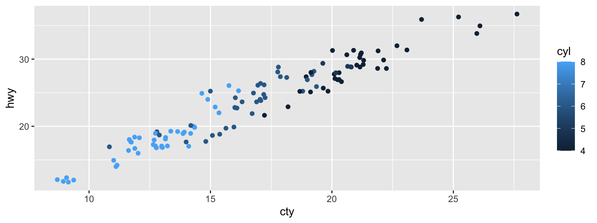
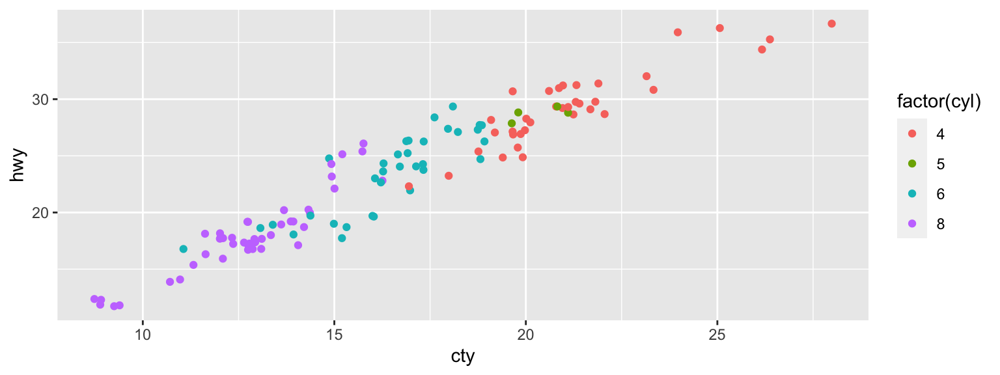
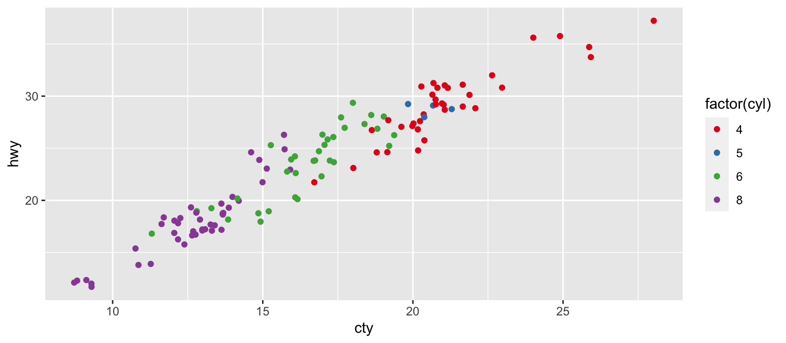
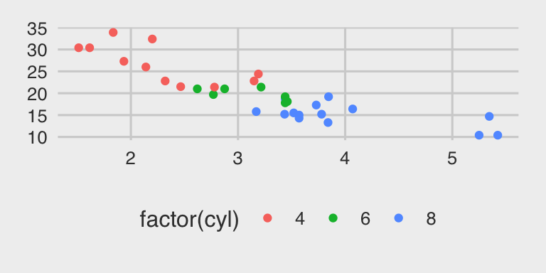

Polishing Plots
Xiongtao Dai
ggplot2 provides great defaults …
- but every aspect of the plot can be changed
- Colors are controlled through scales
- themes control presentation of non-data elements
The default
Default continuous color scheme
library(tidyverse)
p1 <- mpg %>% filter(year == 2008) %>%
ggplot(aes(x = cty, y = hwy, color = cyl)) +
geom_point(position='jitter')
p1 + scale_color_continuous()

Continuous Color Scales
- Continuous colors is used for display numeric variables.
scale_color_gradient is the default choice
- We can change parameters of the default scale, or we can change the scale function
Color gradients
scale_color_gradient (..., low = "#132B43", high = "#56B1F7", space = "Lab", na.value = "grey50", guide = “colorbar")
- Colors can be specified by hex code, name or through
rgb()
- Gradient goes from low to high - that should match the interpretation of the mapped variable
Color gradients - divergent scheme
scale_color_gradient2(..., low = muted("red"), mid = "white", high = muted("blue"), midpoint = 0, space = "Lab", na.value = "grey50", guide = "colorbar")
- Midpoint is value of the ‘neutral’ color gradient2 is a divergent color scheme
- Best matches a variable that goes from large negative to zero to large positive (or below mean, above mean)
The default
Default discrete color scheme
p2 <- mpg %>% filter(year == 2008) %>%
ggplot(aes(x = cty, y = hwy, color = factor(cyl))) +
geom_point(position='jitter')
p2 + scale_color_discrete()

Discrete Color Scales
- Discrete colors are fundamentally controlled through
scale_color_discrete. scale_color_hue is the default choice for factor variables. the scale function
scale_color_hue (..., h = c(0, 360) + 15, c = 100, l = 65, h.start = 0, direction = 1, na.value = "grey50")
- Uses hue, chroma (saturation), and luminance
- Each level of a variable is assigned a different level of h
Manually specifying the colors
scale_color_manual(..., values) values is a vector of color values. At least as many colors as levels in the variable have to be listed
Color and Fill
- Area geoms (barcharts, histograms, polygons) use
fill to map values to the fill color
scale_fill_gradient, scale_fill_gradient2, scale_fill_hue, scale_fill_brewer, scale_fill_grey, …
Brewer color schemes
scale_color_brewer(..., type = "seq", palette = 1, direction = 1)
- Brewer schemes are defined in RColorBrewer (Neuwirth, 2014) palettes can be specified by name or index
- Carefully chosen, such that neighboring colors are perceived as equal distance apart from each other
- See also http://colorbrewer2.org/ (Brewer et al 2002)
All brewer schemes
library(RColorBrewer)
display.brewer.all()

Brewer color schemes - Discrete
For discrete categorical variables, use *_color_brewer:
p2 + scale_color_brewer(palette='Set1')

Brewer color schemes - Continuous
For continuous variables, use *_color_distiller:
states <- map_data('state')
states %>% ggplot(aes(x = long, y = lat)) +
geom_polygon(aes(group = group, fill=lat)) +
scale_fill_distiller(palette='OrRd', direction=1)

Themes
- Themes allow to control every aspect of non-data related aspects of a plot
- Several pre-defined themes:
theme_grey (default), theme_bw, theme_classic, theme_dark
- Use
theme_set if you want it to apply a theme to every future plot, e.g. theme_set(theme_bw())
ggthemes package defines additional themes: library(help = "ggthemes") lists all themes
Example
p <- mtcars %>% ggplot(aes(x = wt, y = mpg, color= factor(cyl))) + geom_point()


Example - more themes


More themes

p + theme_fivethirtyeight()

Elements
- You can also make your own theme, or modify an existing.
- Look up the documentation
?theme
- Gives you a lot of control over plot appearance.
Elements of themes
- Axis:
axis.line, axis.text.x, axis.text.y, axis.ticks, axis.title.x, axis.title.y
- Legend:
legend.background, legend.key, legend.text, legend.title
- Panel:
panel.background, panel.border, panel.grid.major, panel.grid.minor
- Strip (facetting):
strip.background, strip.text.x, strip.text.y
for a complete overview see ?theme
Changing elements manually
- Themes are made up of elements which can be one of:
element_line, element_text, element_rect, element_blank
- example:
mpg %>% ggplot(aes(x = manufacturer)) + geom_bar() +
theme(axis.text.x = element_text(angle=45, vjust=1, hjust=1))